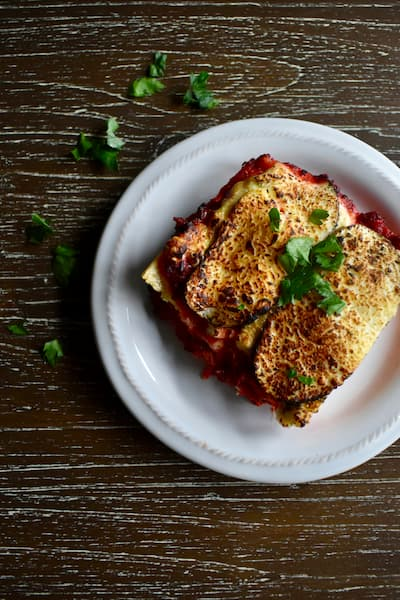

Lasagna

Description
This is a delicious lasagna recipe that includes layers of pasta, cheese, and meat sauce.
Ingredients
- 1 pound ground beef
- 1 onion, chopped
- 2 cloves garlic, minced
- 1 can tomato sauce
- 1 can diced tomatoes
- 1 package lasagna noodles
- 2 cups ricotta cheese
- 2 cups shredded mozzarella cheese
- 1/2 cup grated Parmesan cheese
- Salt and pepper to taste
Steps
- Preheat oven to 375°F (190°C).
- In a large skillet, cook ground beef, onion, and garlic over medium heat until well browned.
- Add tomato sauce and diced tomatoes, and simmer for about 30 minutes.
- In a large pot of boiling water, cook lasagna noodles according to package instructions.
- In a mixing bowl, combine ricotta cheese, 1 1/2 cups mozzarella cheese, and 1/4 cup Parmesan cheese.
- Spread a thin layer of meat sauce in the bottom of a 9x13 inch baking dish.
- Layer with cooked lasagna noodles, ricotta cheese mixture, and meat sauce.
- Repeat layers and top with remaining mozzarella and Parmesan cheese.
- Cover with aluminum foil and bake in preheated oven